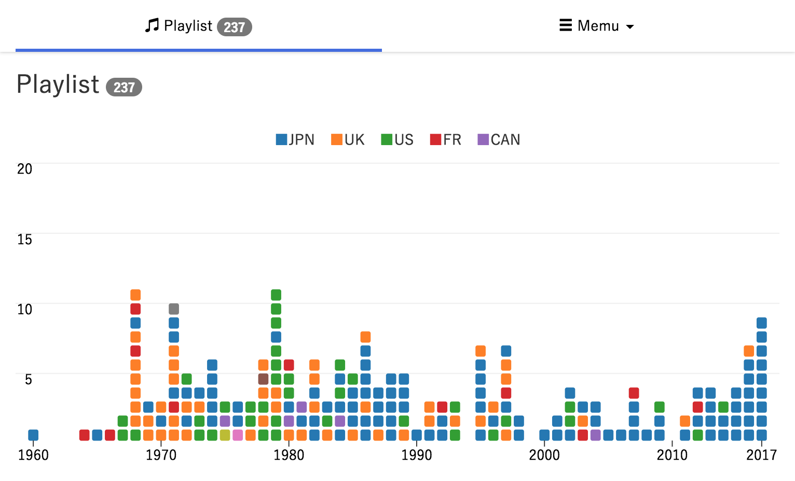

TOKYO FMで放送されているラジオ番組SPITZ 草野マサムネのロック大陸漫遊記のオンエア曲を年別・国別に分類しグラフ化してみました。

ロック大陸測量部
https://cieloazul310.github.io/rockman-survey/
SPITZ 草野マサムネのロック大陸漫遊記
SPITZ 草野マサムネのロック大陸漫遊記は、TOKYO FMで2018年1月から日曜夜9時から放送されている音楽番組です。パーソナリティを務めるスピッツ草野マサムネによる、ビートルズからギャートルズまで網羅する一筋縄ではいかない独特の選曲が魅力です。
自分自身いろんな音楽を聴くようになったきっかけはスピッツのインタビューで言及されている音楽を漁ったことだったので、マサムネ氏の選曲が毎週楽しめる番組が始まったのはとても嬉しいです。
（これはわかる人がわかればいいのですが「『ハチミツ』はツェッペリン」「『フェイクファー』はサバス」でツェッペリンやサバスを聴き始めた）
ラジオ番組可視化
ラジオ番組のオンエア曲を分類して可視化してみたいと思ったのは、2015年秋から2016年春までTBSラジオで放送されていた「SOUND AVENUE 905」という番組がきっかけです。この番組は火曜日に佐野元春、水曜日に鈴木慶一、木曜日に小西康陽、金曜日は週替わりのゲストが選曲した音楽を流すという構成の番組です(木曜日の小西康陽は生DJ)。
選曲者ごとの選曲の傾向がグラフィックになると面白いなと思ったのですが、番組のプレイリストを過去に遡ってデータ化するのは大変だったので手をつけずにいました。
今回こうしてロック大陸漫遊記のプレイリストを可視化してみたら面白い感じになったので、木曜の小西回だけでもデータを集めて可視化してみようかなと思っています（しかしsound905のホームページは消滅…）
グラフの着想
一曲一曲を年別に分類し、縦に積み上げていく形はD3.jsの事例集に載っているThe Top 2000 songs distributed by year of releaseを参考にしています。
今回この説明用に調べて知ったのですが、「The Top 2000」というオランダのラジオ番組の選曲を可視化したもののようです。（ローリングストーン誌のような雑誌が選んだトップ2000だと思ってました）
ロック大陸漫遊記の半年間の選曲傾向


初回から7/15日分までで28回放送、237曲が流れています。
国別に見ると日本 133曲、UK 48曲、US 36曲、フランス 11曲です。
初回の感じでは洋楽のクラシックロック中心の番組になるのかなと思いましたが、予想に反して邦楽が半分以上を占める構成になっています。
今のところUKロックは1970年前後が多く、USロックは80年前後が多い傾向にあります。
2000年代以降は洋楽が少なく邦楽が大半を占めています。特に2010年代の邦楽が多くかかっています。
番組はまだ始まったばかりなので1回1回が全体のデータに大きく影響してしまっていますが、回を重ねるたびにより確かな傾向がわかってくるかと思います。
技術的な話
create-react-appで作成しました。
全体の構成はReact、グラフ部分はD3.jsの関数、UIデザインにはreact-bootstrapを利用しています。
今回の収穫はreact-bootstrapの使い勝手のよさがわかったことです。
本家Bootstrapは過去に使ったことがあったのでその便利さはわかっていましたが、なにぶんjQuery依存なので最近は使うのを避けていました。react-bootstrapのドキュメントを読んでみたところ、jQueryには依存しないと書いてあったので晴れて導入することにしました。
今まで作ったものもreact-bootstrapに置き換えるか迷っています。
課題
SVGのグラフはbbox要素を設定することでレスポンシブに対応しました。しかし、bboxだと設計したサイズ以外では文字のサイズが見えないほど小さくなるなど、バランスが悪くなってしまいます。
できれば早いうちにbboxに依存しないレスポンシブなグラフに書き換えたいです。
また横長のグラフはスマホでは見にくいので、例えば10年単位のグラフをフリックで操作するなど、見せ方を工夫しなければいけないと思います。